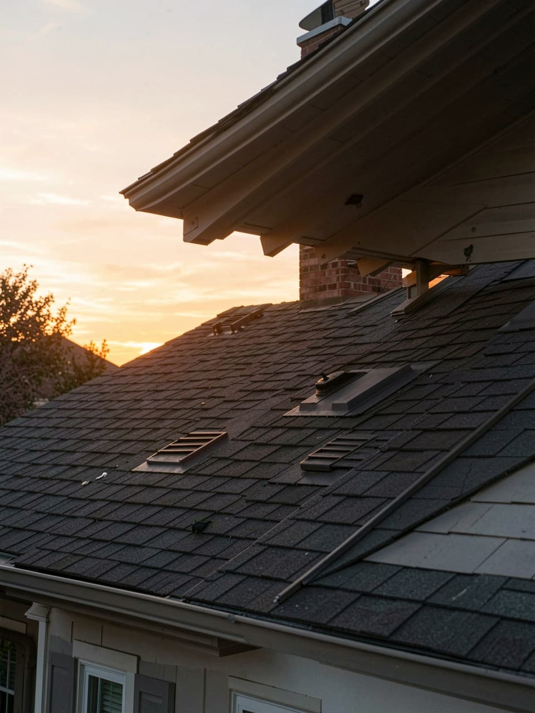
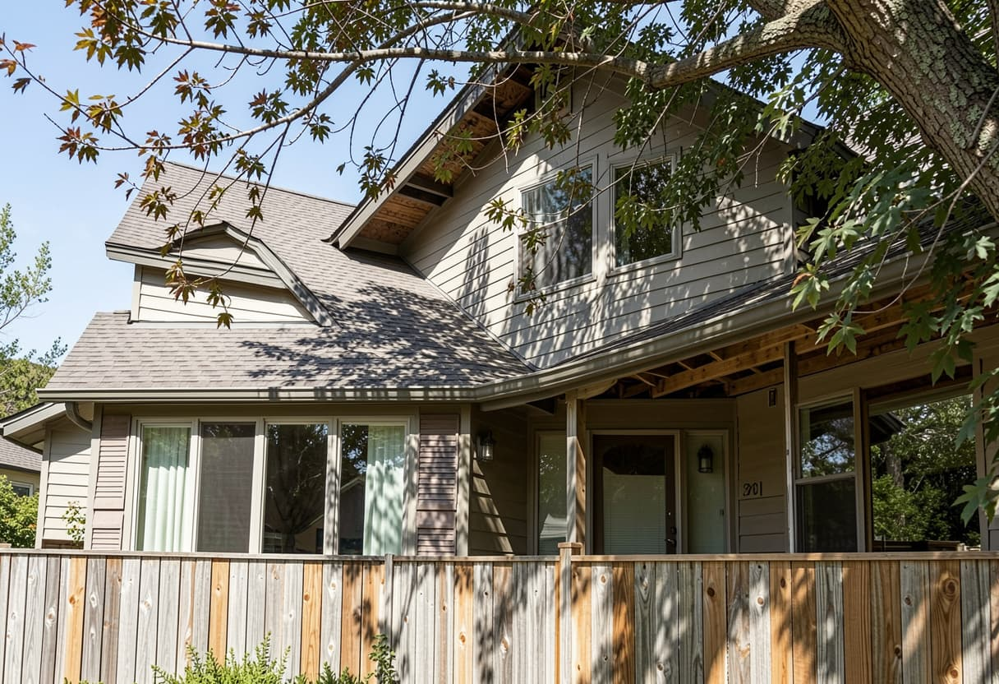
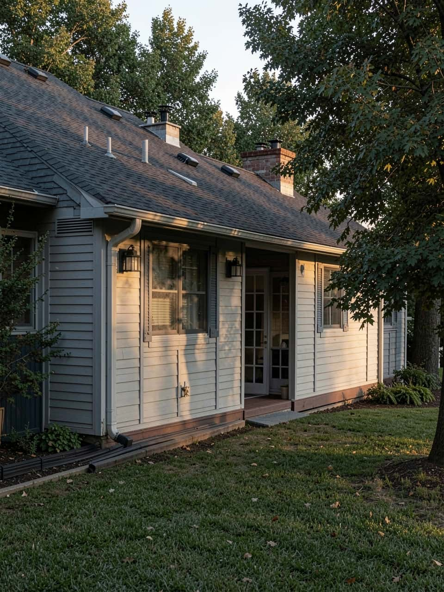
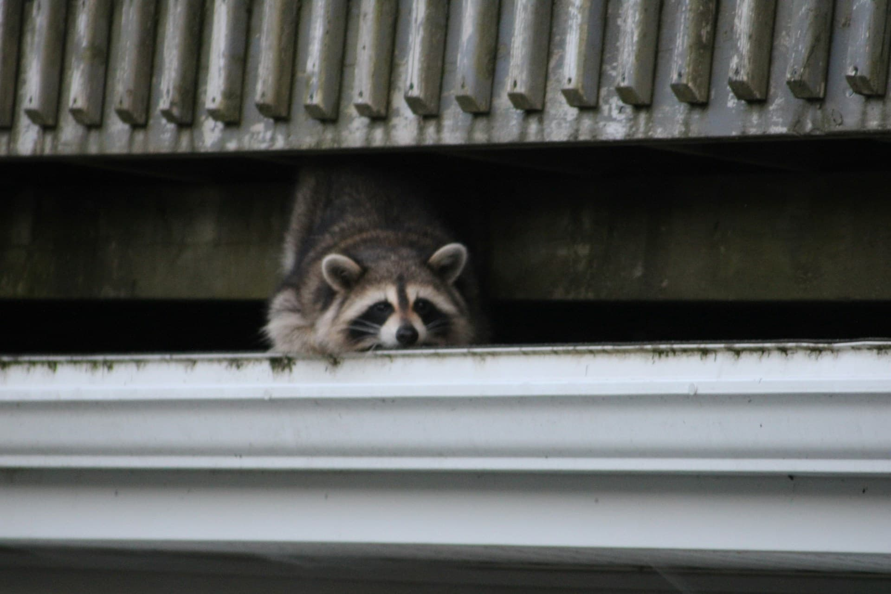
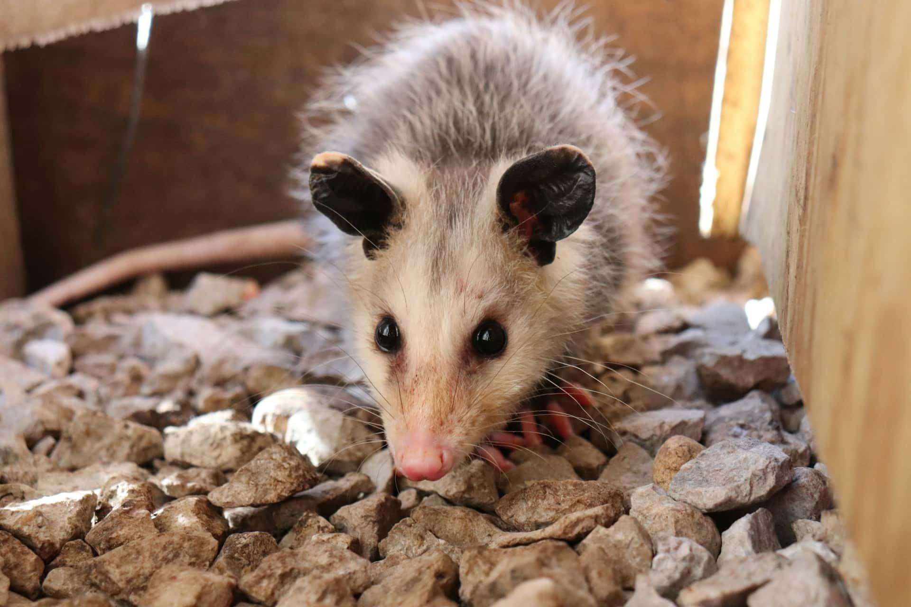
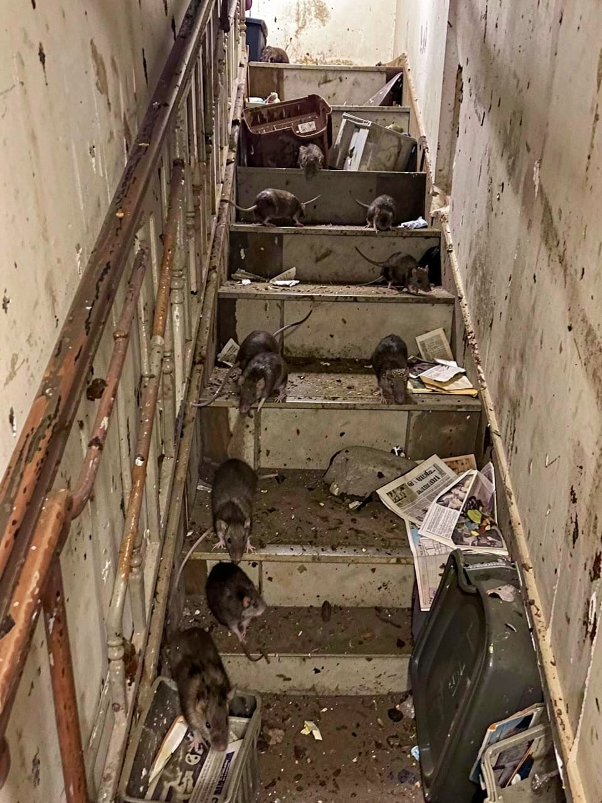
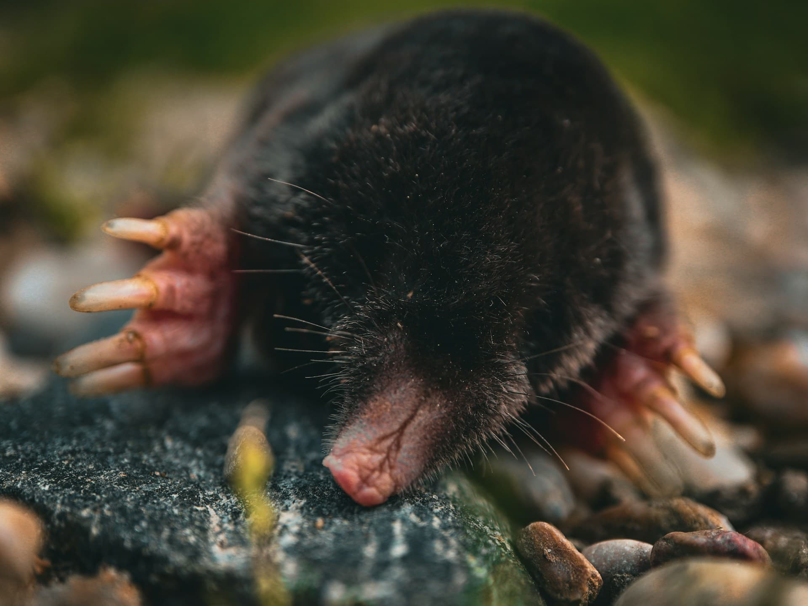
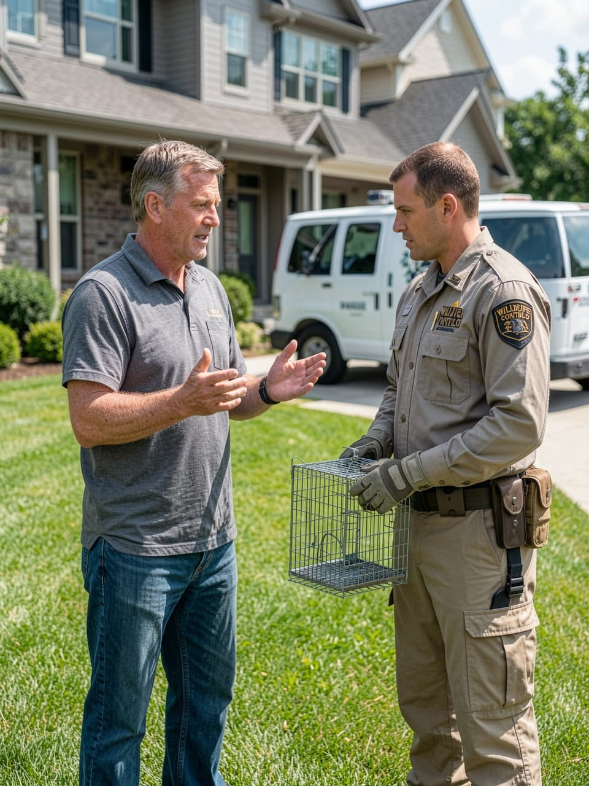

Dusk roofline movement, bat exits, bird vent use, deck odor, and repeated sightings around yard edges are usually easier to notice once evening activity increases.
Homeowner Wildlife Referral Platform
Understand the sign before wildlife activity spreads through the home.
Scratching above a ceiling, odor under a deck, torn soffits, or droppings near a vent usually point to a specific type of intrusion. This site helps homeowners identify where activity starts, why it repeats, what damage it can create, which removal, exclusion, cleanup, or repair steps may be discussed, and how to compare independent local options without guessing from a general service label.
Homeowner Pattern
Many wildlife problems begin at roof vents, soffits, crawlspace gaps, and deck skirting long before the animal is actually seen.

Wildlife Issues Around The Home
Start with the location, the sign, and the likely entry point.
Most homeowners notice a physical clue first: scratching in an attic, odor near a crawlspace, torn vent screening, digging beside a shed, or droppings near a roofline. The location of that clue usually explains why the problem is happening and which type of help may be needed next.
What to notice first
- Noise above ceilings or inside walls
- Odor around decks, porches, or crawlspaces
- Torn vents, soffits, skirting, or loose trim
- Droppings, staining, digging, or disturbed soil

-
01
Attic edges
Scratching above ceilings, stained soffits, or torn vents can point to roofline entry, insulation disturbance, and a need to compare removal with sealing and cleanup.
-
02
Crawlspaces
Odor, movement under floors, torn skirting, or disturbed vapor barrier often suggest low-entry shelter that may call for removal and exclusion around foundation gaps.
-
03
Sheds and decks
Animals using deck voids or sheds can leave odor, nesting material, and repeat digging, which usually means comparing access blocking with cleanup and habitat correction.
-
04
Yard transitions
Burrows, tracks, shifting soil, or repeated movement along fence lines can explain how wildlife keeps returning and whether perimeter-focused solutions make sense.

Evening movement often appears first at vent lines, soffits, and roof transitions.
Seasonal Patterns
Season matters, but only where it changes the next decision.
Attics, wall voids, crawlspaces, garages, and lower sheltered gaps become more valuable as cover, making repeat entry points and indoor-adjacent signs more important.
Mature trees, low decks, older vents, attached garages, dense edging, and exposed crawlspace details usually deserve the closest look regardless of season.
Grouped Issue Types
Start with the part of the property where the activity begins.
This section works as a quick route map. Each group opens a dedicated guidance page so homeowners can see where the issue usually appears, what damage it creates, and which removal, exclusion, cleanup, or correction steps may be discussed locally.

Property sequence
Upper structure, lower shelter, interior gaps, then perimeter movement.

Roof & attic entry
Usually starts with scratching, thumping, droppings near vents, torn soffits, or chimney access and often leads to comparing removal, cleanup, and secure sealing.
View issue guide
Lower structure shelter
Often shows up as odor, digging, movement under decks, damaged skirting, or burrows near foundations and usually points toward removal with understructure exclusion.
View issue guide
Interior & utility routes
Usually involves droppings, gnaw marks, food contamination, wall noise, or lower-gap entry and often requires removal, sanitation, and tighter exclusion work.
View issue guide
Yard & perimeter movement
Often begins with raised runs, shifting soil, recurring sightings, or edge-cover movement and usually leads to comparing control options and perimeter reduction steps.
View issue guideLocal Connection
Identify the problem, compare solutions, then check local availability.
01
Describe the signs
Start with the noise, odor, damage, droppings, or digging pattern and the part of the property where it appears.
02
Compare solution types
Review whether the issue may involve removal, exclusion, cleanup, repairs, or a combination of those steps.
03
Request assistance
Check local availability and compare independent wildlife professionals that serve your area and property type.

Once the entry zone is clear, homeowners can compare local help with much less guesswork.
FAQ
Common homeowner questions, answered in plain language.
What does this site help homeowners do?
It helps homeowners identify wildlife activity, understand removal and exclusion methods, compare service approaches, and request local assistance options from independent providers.
What should a homeowner pay attention to first?
Start with the location and the sign: attic noise, vent damage, crawlspace odor, droppings, digging, staining, or visible entry points around rooflines and lower foundations.
Why do removal and exclusion get discussed together?
Solving the immediate wildlife issue and closing the access point are often separate steps. If the opening remains, the same problem can return.
Can damage remain after the animal is gone?
Yes. Insulation compression, odor, droppings, bent vent covers, damaged soffits, and contaminated crawlspace areas may still need attention after removal.
What should a homeowner compare when evaluating providers?
Compare how removal, exclusion, cleanup, repair scope, licensing, insurance, and follow-up recommendations are explained for your specific property issue.